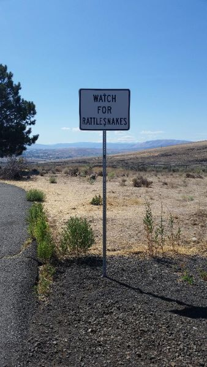
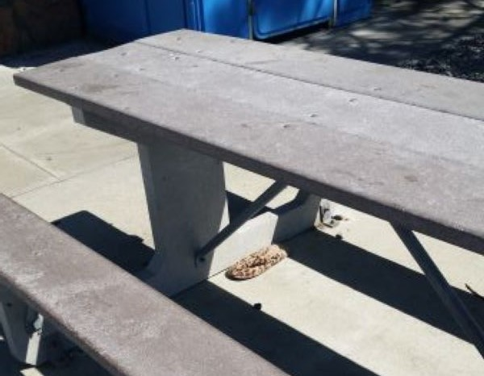
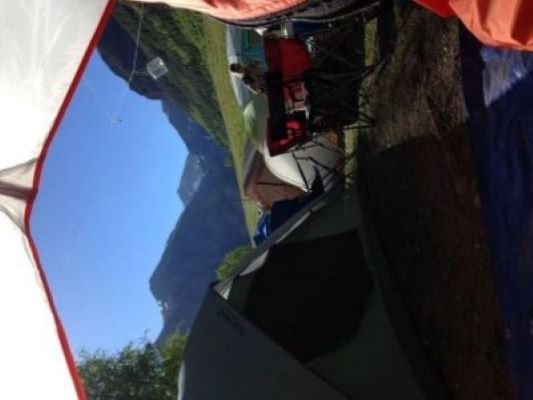

A family adventure to the Telluride Bluegrass Festival
In June of 2017, my wife and I took our family on a grand road trip. We set out to enjoy a long weekend of camping and music at the 44th annual "Telluride Bluegrass Festival".
Telluride, in southwest Colorado, is an historic small town nestled in the San Juan Mountains.
The Drive
My wife, Colleen, driving while wearing her latest antique store treasure, some fancy sunglasses on a chain.

A sign at a rest area in southwest Colorado.

Here we see a well played prank. Beneath a picnic table that sits opposite the above sign, a leopard print slipper slithers menacingly. This was enough to make a midwestern heart skip a beat! As we approach Telluride, the view in every direction is dominated by snowcapped mountains.
Camping

The view from within the tent on our first morning in the mountains.Our tent was pitched on the bank of Boulder Creek. It was refreshingly cool in the heat of the day. At night, the water's sounds were constant and soothing.It took very little time to make some new freinds.
The Festival
The evening main stage performances bring crowds to enjoy the world class music and breathtaking views of sunset.The view from stage My son, Lucas, practicing a new skill in the family area of the festival grounds.
Exploring the town
My son , Caleb enjoying the ride on the gondola that connects Telluride with mountain communities and ski slopes.A local landmark, "Baked in Telluride" serves bakery treats from bagels and donuts to pizza and burritos. It is a favorite rendevouz spot for festival goers as well as locals.Here I pose while on a walk through town.